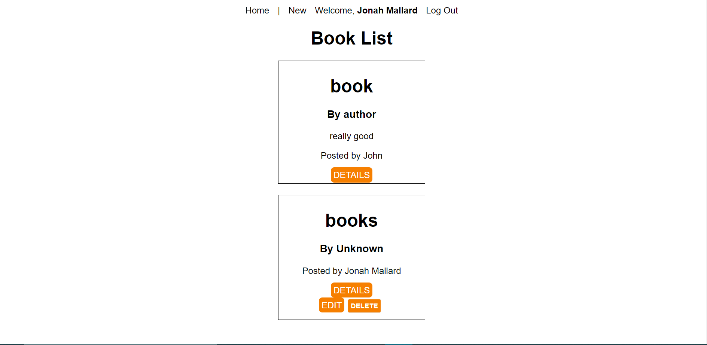

Built with MongoDB/Mongoose, Express.js, React.js, and Node.js
I was able to combine all four of these technologies/frameworks to create a dynamic user experience, that allows a user the ability to create, view, update, and delete a given book depending on which user created it.
You can view all the books created by each user that has signed up, and logged in to the application, creating a multi-user homepage. Similar to Instagram or Facebook however it renders each book based on all the users, not just the ones that have been followed or friend requested.
This app contains the most code I've written in one single project. It includes an Express, MongoDB backend, with React and Node running on the frontend. It also uses Client-side routing, which enables extremely fast page changes that have almost 0 load time.
The MERN stack consists of a reausable chunk of code I created for the backend. The backend alone conists of several hundred of lines of code. As well as React on the frontend which uses about 14 to 15 separate components creating a dynamic way of passing aorund data to each page and form etc.